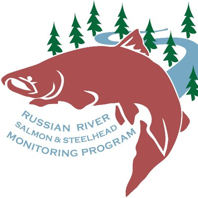
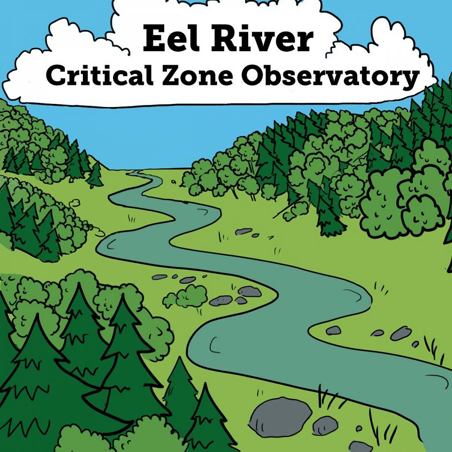
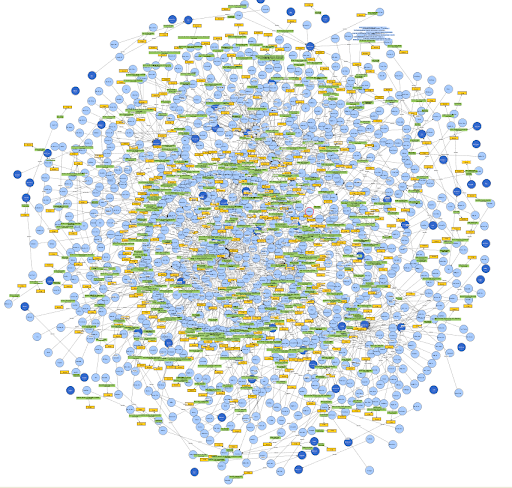
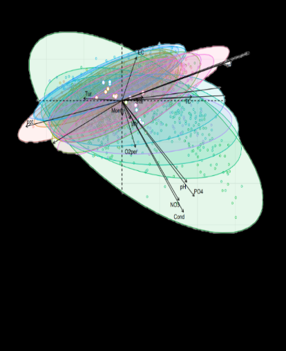
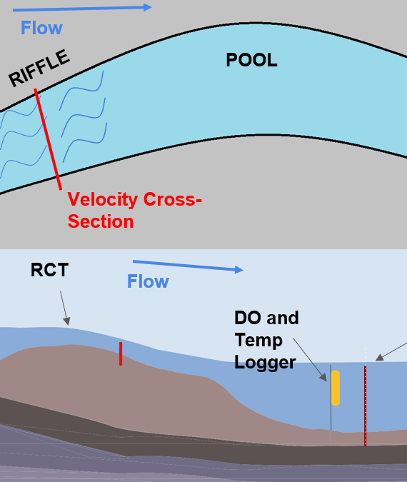

Hi! My name is Wes Slaughter, and I'm an environmental
scientist interested in biogeochemistry
and public health
The site below provides some details about my proffesional experience, research, and hobbies. Feel free to reach out!
None of the logos used or text and written descriptions below state or imply endorsement or sanction of any kind from the referenced organisations, nor do they represent opinion or official policy of the organisations. There is a directory of sources for all logos or graphics used not produced by the authort at the bottom of the page. All views and statements are completely and entirely my own.
Professional Experience
EPA ORD Center for Public Health and Environmental Assessment
Oak Ridge Institute for Science and Education Fellow
- Developing NaKnowBase (NKB)- a database of EPA nanomaterials research- to interface and exchange with databases outside of the EPA using Python and semantic technologies such as RDF, OWL, and SPARQL
- Collaborating with US and EU federal agencies and universities to develop software and standards to integrate NKB, and potentially other databases, into accepted international ontologies
- Statistical analysis of nanomaterials data and related data of environmental and public health concern
- Writing, analysis, and support for manuscripts communicating research and developed technologies
Sierra Streams Institute
Sierra Nevada AmeriCorps Partnership, River Scientist AmeriCorps
- A climate data science project where I assisted in developing a structural equation model of the effects of climate change and land use on a 20-year water quality dataset, including data curation and multivariate data analysis (ordination, z-plots, etc.) Manuscript in progress, presented at 2020 California Water Data Science symposium, and the 2020 Sierra Nevada Alliance conference.
- Extracted and analyzed data from satellite imagery and rasters using R and Google Earth Engine (Javascript API)
- Assisting a study exploring the potential link between contaminants from legacy mining (As, Cd, Pb, Hg) to breast cancer rates in rural Northern California, and building a web portal for this study in Python’s Django framework
- Data analysis and visualization for a study investigating E. Coli outbreaks in a densely populated lake
- Helping to plan projects and manage volunteers, interns, and field crews for diverse land management projects- such as invasive plant removal, wildlifem onitoring, and fuels reduction.
California SeaGrant Russian River Salmon and Steelhead Monitoring Program
Watershed Stewards Program, AmeriCorps

- Conducted salmonid life cycle monitoring through trapping, PIT tagging, snorkeling, electrofishing
- Stage, flow, temperature, dissolved oxygen data collection, management, and analysis in associated softare (e.g. HOBOware, FlowTracker 2.0, etc.) and Excel
- Writing, analysis, and support for manuscripts, posters, and reports communicating research and monitoring
- Surveying in a large team, coordinating complex schedules, field sites, and vehicle logistics, as well as organizing and using diverse scientific gear- from iPads, handheld GPS, softwares and data protocols, to drysuits, waders, and diessection kits.
UC Berkeley Environmental Science, Policy and Management
Grantham Lab Research Assistant
- Co-designed a BACI study on the effect of flow augmentation on salmonid foraging behavior and the phenology of stream food webs; authored on a manuscript from this study, submitted to Ecological Applications
- Presentation of research at 2018 and 2019 Salmonid Restoration Federation Conference, as well as 2019 American Fisheries Society conference
- Surveying stream across multiple watersheds in Northern California for flow and geomorphic conditions
- Use of auto-level for full pool-bed surveys and using Excel to calculate pool volumes as well as analysis of flow-geometry relationships, development of polynomial rating curves
Eel River Critical Zone Observatory
Power Lab Research Assistant

- Analyzed salmonid feeding behavior using 3-D videogammetric techniques
- Performed analysis such as linear biomass regression, rating curves, and calculating pool volumes
- Sampling and identification of of algae, benthic macroinvertebrates, freshwater fish, as well as habitat conditions such as substrate type and size, percent cover, estimated flow
- Strong foundation in river food web dynamics, theoretical ecology, and scientific method and principles
Research Projects
NaKnowBase
an EPA ORD Database of Nanomaterials Research

- NaKnowBase is a MySQL database of EPA nanomaterials research
- There is an international effort for 'linked data' in the field of bioinformatics and specifically in nanomaterial research
- Semantic techonologies- Resource Description Framework (RDF), Web Ontology Language (OWL), and SPARQL RDF Query Language (SPARQL), provide the means to rigorously define and retrieve information by agreed upon, discrete, and unique identifiers.
- I am supporting EPA efforts to integrate EPA Research into internationally accepted ontologies for bioinformation
- These efforts present an approach to overcoming traditional stumbling blocks in domestic and international research- siloed and uniteroperable data- with the potential to allow for unprecedented collaboration and leveraging of related data to answer important questions in the field of chemical safety and beyond
Effect of Climate and Land Use on 20 years of Citizen Science Wtarer Quality Data
in a California Sierra Nevada Foothills Watershed

- Sierra Streams institute's team of staff and citizen scientists have been collecting Nitrate, Phosphate, Temperature, pH, E. Coli, and other water quality metricsmonthly at 18 sites in the Deer Creek watershed for the last 20 years
- Using Google Earth Engine (GEE) to access LANDSAT imagery, as well as the USGS California Basin Characterization Model (CalBCM) climate data set, we were able to collect land use and climate data for that time period as well
- We are using this data to develop a structural equation model to quanitify how climate and land use may have been effecting water quality in Deer Creek over the last 20 years
- In support of developing this model, I used JavaScript in GEE, worked with NetCDF files from CalBCM in R, and employed a multitude of data curation, extraction, and management tools to get our data set together and valid
- Then, I explored the data set with multivariate analysis methods such as Prinicpal Component Analysis and Z-plots
- The project is still in progrss, with final model runs and a manuscript being drafted currently
Effect of Flow Augmentation on Salmonid Foraging Behaviour, Invertebrates, and Water Quality
in a California Stream

- Porter Creek is a salmon-bearing tributary to the Russian River in Northern California.
- Porter creek, like many salmon-bearing creeks in the region, experiences varying degrees of intermittent surface flow during the California dry season.
- This intermittency can be exaggereated by climate and land use ffects. Much research and funding is going into understanding how to retain salmon populations in Northern California, and in particular, how to maintain them in intermittent streams such as Porter Creek, which make up a substantial and growing portion of California's salmon habitat.
- Porter Creek, through a unique partnership between government and private landowners, has a pump and set of pipelines which can divert water from a vineyward reservoir into the creek with a controllable schedule and flow.
- This research project aimed to study the potential effects of this flow on juvenile salmonid behaviour, physical habitat, and invertebrate communities.
- The study used a Before After Control Impact (BACI) design, and utilized both standard and cutting edge measurement techniques- surveying pool habitat, developing rating curves, sampling benthic macroinvertebrates, and using 3-D videogrammatric methods to quantify fish movement and behavour.